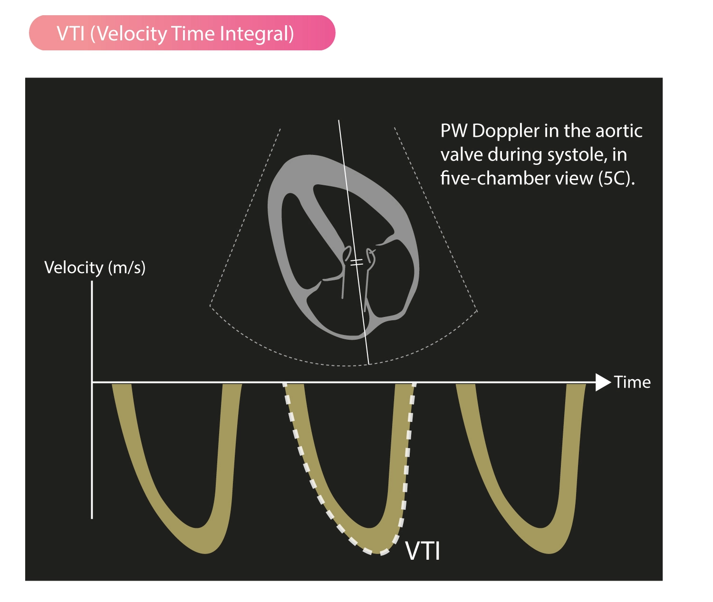
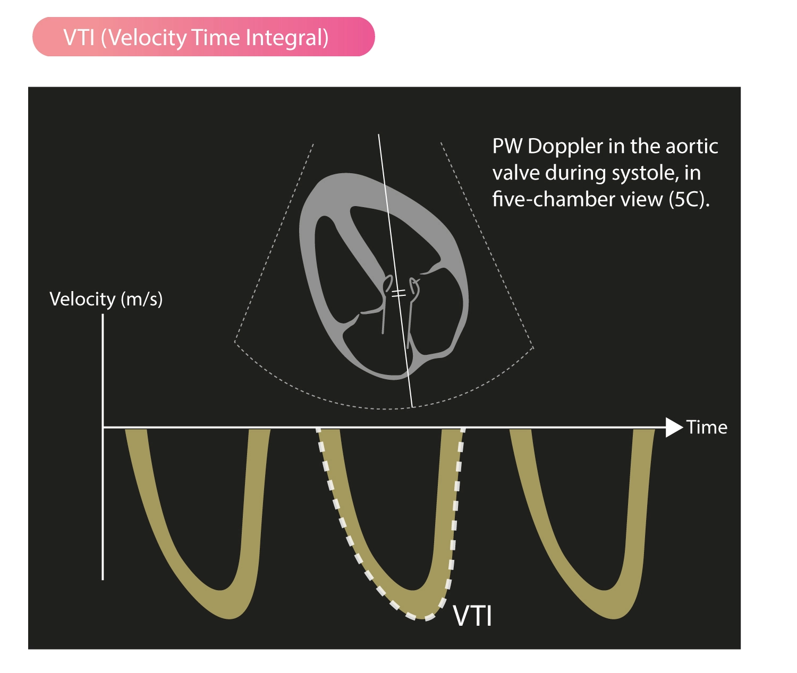

Background
VTI is a hemo-dynamic echo parameter measured from Doppler spectrum across the valves, usually in the LVOT. This parameter can be used to calculate cardiac output at the LVOT: $$ SV = Area_{LVOT} \times VTI $$ $$ SV = \pi \times [\frac{LVOT}{2}]^{2} \times VTI $$ $$ CO = SV \times HR $$
Measuring VTI
TTE view: 5-chamber apical view. Align the LVOT in parallel to the ultrasound beam. Measure the PWD flow at the same level of the LVOT that you measured the LVOT Diameter at.
 

Interpretation of VTI
- Measure the VTI.
- Measure the LVOT Diameter to determine the LVOT cross-section area.
- Measure the heart rate.
- Calculate cardiac output: Online calculator or the US machine will automatically calculate it for you.
References
- What is time velocity Integral ? (VTI ) | Dr.S.Venkatesan MD
- Stroke Volume, VTI (Velocity Time Integral) & Cardiac Output – ECG & ECHO
- Measuring Cardiac Output with Echocardiography Made Easy - POCUS 101
- Advanced Critical Care Ultrasound: Velocity Time Integral Before and After Passive Leg Raise--In Sepsis, When Is Enough (Fluids) Enough? EMRA
- https://anesthesia.bidmc.harvard.edu/ADEL/documents/echo/Cardiac%20Output%20measurment%20with%20echocardiography.pdf